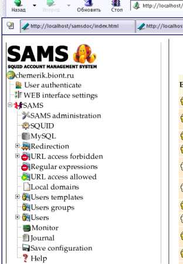
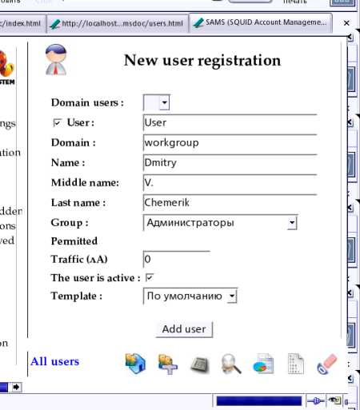
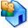
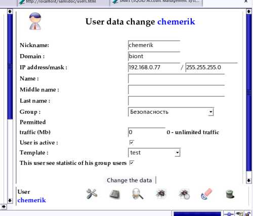
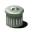

Пользователи SAMS
Параметры пользователей SAMS
Имя пользователя - имя пользователея в sams. При NTLM, AD авторизации должно совпадать с
реальным пользователем в домене.
Домен - Домен пользователя в sams. При NTLM, AD авторизации должно совпадать с
реальным доменом. При ncsa и ip домен не используется.
Пароль пользователя - задается при ncsa авторизации и при ip доступе.
При ncsa авторизации пароль используется для получения доступа пользователя к SQUID и
собственной статистике (авторизации в web интерфейсе).
При IP доступе пароль используется для получения доступа пользователя собственной статистике
(авторизации в web интерфейсе).
IP адрес - используется при доступе пользователей к SQUID по IP адресу
Ф.И.О. - используется в WEB интерфейсе в отчетах по трафику пользователей
Группа - группы используются для компоновки пользователей в WEB интерфейсе для удобства
админстрирования. Рекомендую создавать группы в соответствии с подразделениями предариятия.
Разрешенный трафик (задается в Мегабайтах) - квота на объем получаемой пользователем информации. Квота
устанавливается на месяц. При превышении разрешенного трафика пользователю запрещается доступ к
SQUID. Если квота трафика пользователя равна 0, то трафик считается без ограничения.
Первого числа месяца счетчик трафика автоматически обнуляется. Это необходимо разрешить в настройках SAMS.
Пользователь активен - пользователю разрешен/запрещен доступ к SQUID
Шаблон пользователя - определяет политику доступа пользователей к прокси серверу SQUID.
В шаблоне задается время доступа пользователя к squid, списки запрета доступа, списки перенаправления
запросов и т.д.
Пользователь имеет право смотреть статистику пользователей своей группы - пользователь имеет право
просматривать статистику других пользователей в пределах группы. Рекомендуется давать это право руководителям
подразделений :)
Создание нового пользователя
Определяет состав пользователей прокси сервера SQUID, зарегистрированных в SAMS и
свойства каждого из них.

К свойствам пользователя SAMS можно отнести:
Работа с пользователями
В дереве конфигурации и управления WEB интерфейса SAMS выберите пункт Users (Пользователи).
В нижнем фрейме правой панели появятся контекстно зависимые к способу авторизации
на прокси сервере SQUID кнопки.
Регистрация нового пользователя
1. Ручной ввод пользователей
Подведите указатель мыши к кнопке (Add user) и нажмите правую кнопку мыши.

В открывшемся диалоге введите свойства пользователя (ФИО, login, ip адрес, шаблон, квоту пользователя на объем получаемой информации, группу), активируйте его (выставьте checkbox " The user is active") и нажмите кнопку
ADD user
При NTLM и AD авторизации пользователей SQUID и если правильно работает winbind, то будет выведен список
пользователей домена, из которых можно выбрать пользователя для регистрации.
Если квота пользователя на объем получаемой информации выставлена равной 0, считается что трафик пользователя задан без ограничения объема.
Импорт пользователей
WEB интерфейс SAMS позволяет импортировать пользователей из:
Домена WinNT 4.0, Windows 2000
Домена Active Directory
Списка пользователей NCSA авторизации, подготовленного при помощи htpasswd
Для импорта пользователей подведите указатель мыши к кнопке 
(Insert all users) и нажмите правую кнопку мыши.
В открывшемся диалоге выберите импортируемых пользователей и введите их свойства (группу пользователей, шаблон), активируйте его (выставьте checkbox " The user is active") и нажмите кнопку "Add"
Изменение свойств пользователя
P>В дереве конфигурации и управления WEB интерфейса SAMS выберите пункт Users (Пользователи) и
откройте пользователя, свойства которого вы хотите изменить.
В нижнем фрейме правой панели появятся контекстно зависимые к авторизовавшемуся в WEB интефейсе кнопки.
Пользователю с правами администратора доступна кнопка  (Change the user data).
(Change the user data).

Подведите указатель мыши к кнопке и нажмите правую кнопку мыши. В открывшемся диалоге измените свойства
пользователя (ФИО, login, ip адрес, шаблон, квоту пользователя на объем получаемой информации, группу),
активируйте или отключите его (выставьте checkbox " The user is active") и нажмите кнопку
"Change the data".
Удаление пользователя
Для удаления пользователя необходимо нажать на кнопку 